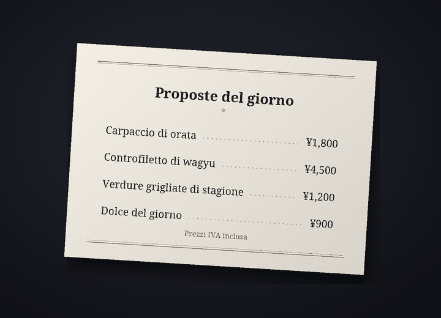

Bot di traduzione per chat su Discord
Chatta su Discord, ognuno nella sua lingua
Cozirom è un bot per Discord che traduce la chat nella lingua dell'altra persona. Una volta attivato, i tuoi messaggi vengono pubblicati tradotti con il tuo nome e la tua immagine del profilo, e anche il testo nelle immagini viene tradotto.
Le traduzioni sono fatte da un'IA (Claude di Anthropic). Può sbagliare, quindi per le cose importanti controlla anche l'originale.
Cosa fa il bot
Un solo bot traduce testo, immagini e voce
I limiti dei piani si contano in traduzioni. Un messaggio tradotto in una lingua vale 1.
6 funzioni
In traduzioni
Traduzione automatica
Usa
/traduci attivauna volta sola e i tuoi messaggi in quel server vengono pubblicati nell'altra lingua, con il tuo nome e la tua immagine del profilo. L'originale resta sotto la traduzione in caratteri piccoli, e il pulsante mostra l'originale completo.
mostra l'originale completo.Traduzioni1 per messaggio
Testo nelle immagini
Menu dei ristoranti, schermate di gioco, meme: se un'immagine contiene testo, viene letto e tradotto. Si apre dall'icona
 sotto le immagini di chi ha attivato la traduzione, oppure con il clic destro. Il risultato lo vede solo chi l'ha chiesto, e le immagini senza testo non vengono contate.
sotto le immagini di chi ha attivato la traduzione, oppure con il clic destro. Il risultato lo vede solo chi l'ha chiesto, e le immagini senza testo non vengono contate.TraduzioniCirca 9 per immagine
Traduzione sovrapposta
Con l'icona
 ricevi una copia dell'immagine con il testo originale cancellato e la traduzione disegnata al suo posto. All'inizio il carattere è «Come l'originale», simile alle lettere originali, e puoi scegliere senza costi tra un massimo di 10 set di caratteri, come «Con grazie», «Scritto a mano» e «Fumetto». Funziona meglio con il testo orizzontale, come screenshot, meme, schermate di gioco e menu, e il risultato lo vede solo chi ha premuto.
ricevi una copia dell'immagine con il testo originale cancellato e la traduzione disegnata al suo posto. All'inizio il carattere è «Come l'originale», simile alle lettere originali, e puoi scegliere senza costi tra un massimo di 10 set di caratteri, come «Con grazie», «Scritto a mano» e «Fumetto». Funziona meglio con il testo orizzontale, come screenshot, meme, schermate di gioco e menu, e il risultato lo vede solo chi ha premuto.TraduzioniCirca 19 per immagine


Esempio: la foto originale (un menu in giapponese) e la stessa foto con il testo cancellato e la traduzione italiana disegnata al suo posto con il carattere «Con grazie». Messaggi vocali
Fai clic destro su un messaggio vocale inviato dall'app per telefono e ottieni ciò che è stato detto con la sua traduzione. Vengono trascritti i messaggi fino a 3 minuti, e i messaggi senza parlato non contano.
Traduzioni1 al secondo, più la traduzioneUn messaggio di 10 secondi vale di solito 11
Quattro toni
Slang, Informale, Amichevole o Formale, da scegliere per ogni server. Del tu con gli amici, del lei in un posto nuovo. Con il piano Guest (gratuito) hai tutti e quattro per i primi 14 giorni, poi il tono amichevole.
TraduzioniA pagamento: tutti. Free: i primi 14 giorni
31 lingue
Le lingue di traduzione sono 31. L'interfaccia e i nomi dei comandi del bot sono disponibili in 30 lingue di Discord, così anche l'altra persona lo configura nella propria lingua.
Traduzioni31 per tradurre, 30 per l'interfaccia

Come iniziare
Tre passaggi e la traduzione compare con il tuo nome
Aggiungi il bot al server
Un amministratore del server aggiunge il bot al server. Chiedi il link di invito tramite il server di assistenza.
Attiva la traduzione
Chi vuole essere tradotto usa
/traduci attivain quel server. Il bot indovina la tua lingua e quella dell'altra persona e apre il pannello delle impostazioni. Se non sono giuste, cambiale nei menu a tendina.Scrivi come sempre
Scrivi come sempre e la traduzione compare con il tuo nome. Inizia con il piano Guest (gratuito) e cambia piano nella pagina dei piani quando ti serve di più.
Privacy
I messaggi da tradurre e le immagini vanno solo ad Anthropic (USA), e l'audio dei messaggi vocali solo a Google (USA). Il bot conserva l'originale di una traduzione pubblicata per 14 giorni e le traduzioni in cache per 30 giorni, e non salva immagini, audio né il testo letto da essi. Il contenuto delle chat non finisce mai nei log, e con /traduci elimina-i-miei-dati puoi eliminare i tuoi dati in qualsiasi momento.